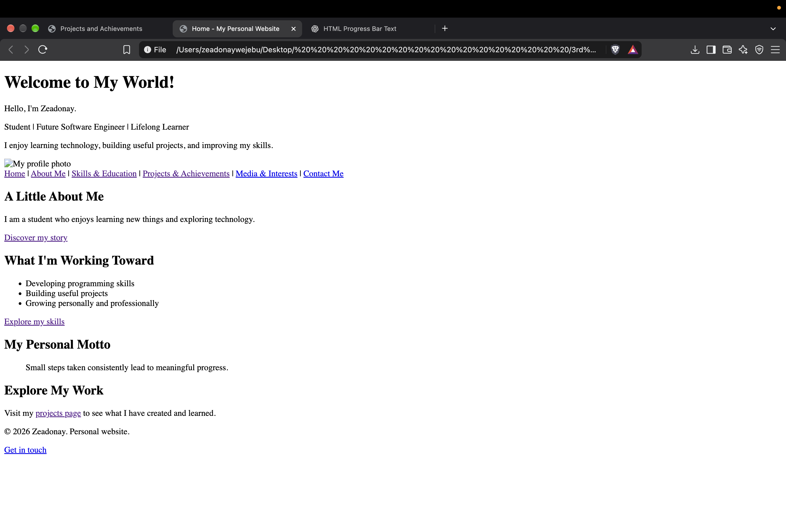
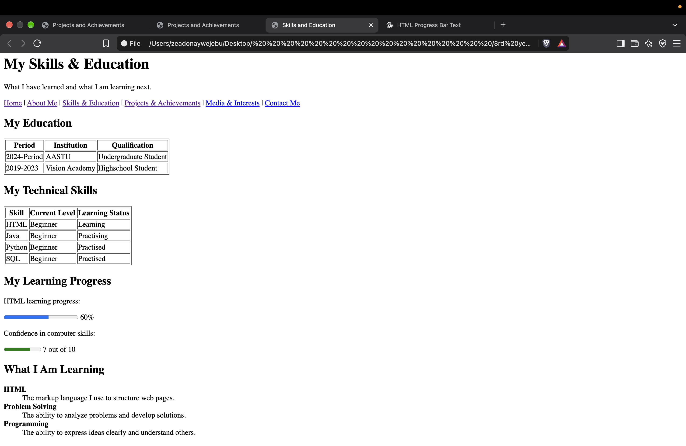

Featured Projects
Project 1: My First Web Page

This project helped me understand how HTML structures headings, paragraphs, links, and images.
What I learned
- Creating a basic HTML document
- Using headings and paragraphs
- Adding links and images
Project 2: MY Skills and Education

i practiced creating tables, details, and other HTML elements.
website sections
- Personal Information
- Home
- About Me
- Contact Me
- Work
- Skills & Education
- Projects & Achievements
- Media & Interests
Achievements
- Learning achievement: Created my first HTML page.
- Academic achievement: Add a real achievement here.
- Personal achievement: Add something you are proud of.
Project Files
Visitors can use the link below to download a sample project document.
Download My Project Report (PDF)My Next Goals
My future projects will help me develop these abilities:
- Build a website with several connected pages.
- Learn CSS.
- Learn JavaScript.